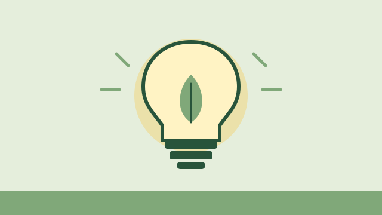
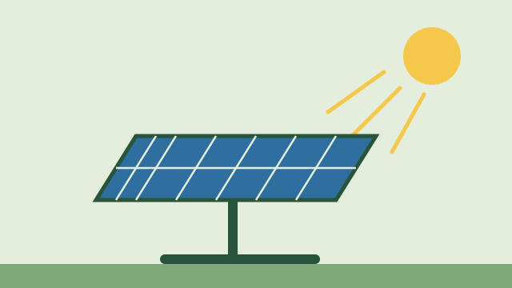
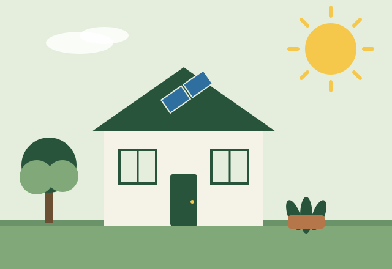

Efisiensi energi
Menggunakan lebih sedikit energi untuk hasil yang sama, misalnya mengganti lampu pijar dengan LED atau merawat AC agar bekerja optimal. Fokusnya adalah mengurangi energi yang terbuang.
Hemat energi berarti menggunakan energi secukupnya untuk mendapatkan manfaat yang sama, tanpa pemborosan. Contohnya, lampu tetap menerangi ruangan, tetapi hanya menyala saat dibutuhkan dan memakai teknologi yang efisien.
Hemat energi bukan berarti hidup serba terbatas. Tujuannya adalah memakai energi dengan bijak.

Dua istilah yang sering tertukar, padahal berbeda.
Menggunakan lebih sedikit energi untuk hasil yang sama, misalnya mengganti lampu pijar dengan LED atau merawat AC agar bekerja optimal. Fokusnya adalah mengurangi energi yang terbuang.
Energi dari sumber yang dapat terus diperbarui secara alami, seperti matahari, angin, dan air. Fokusnya adalah dari mana energi berasal.
Keduanya saling melengkapi: mengurangi kebutuhan energi lebih dulu, lalu memenuhinya dengan sumber yang lebih bersih.
Pembangkit listrik yang membakar bahan bakar fosil menghasilkan emisi. Makin hemat listrik, makin kecil kebutuhan produksi energi tersebut.
Listrik yang terbuang berarti uang yang terbuang. Kebiasaan hemat membantu menjaga tagihan tetap wajar.
Energi yang dipakai secara bijak membantu menjaga ketersediaannya, sejalan dengan tujuan energi yang terjangkau untuk semua.

Panel surya mengubah cahaya matahari menjadi listrik. Cocok untuk atap rumah di daerah yang banyak terkena sinar matahari.
Turbin angin memutar generator untuk menghasilkan listrik, terutama efektif di lokasi dengan angin yang cukup stabil.
Aliran air memutar turbin pada pembangkit listrik tenaga air, dari skala besar hingga skala kecil di desa.

Gas rumah kaca, seperti karbon dioksida, menahan panas di atmosfer. Pembakaran bahan bakar fosil untuk listrik, kendaraan, dan industri adalah salah satu sumber utamanya.
Karena itu, mengurangi pemborosan energi dan beralih ke sumber yang lebih bersih adalah bagian dari upaya menangani perubahan iklim. Besarnya dampak setiap rumah bergantung pada sumber listrik di daerah masing-masing.
SDGs adalah tujuan pembangunan berkelanjutan yang disepakati secara global di bawah PBB.
Memastikan akses energi yang terjangkau, andal, berkelanjutan, dan modern untuk semua. Rumah hemat energi mendukung penggunaan energi yang lebih bijak dan merata.
Mengambil tindakan segera untuk menangani perubahan iklim dan dampaknya. Mengurangi emisi dari kebiasaan sehari-hari adalah kontribusi di tingkat rumah tangga.
Jendela dan ventilasi yang baik mengurangi kebutuhan lampu dan pendingin pada siang hari.
Pilih dan gunakan peralatan listrik sesuai kebutuhan, serta matikan saat tidak dipakai.
Pohon dan tanaman memberi keteduhan dan membuat lingkungan rumah lebih nyaman.
Tidak. Hemat energi berarti menghilangkan pemborosan, misalnya lampu menyala di ruangan kosong, sambil tetap menjaga kenyamanan.
Tidak harus. Mengubah kebiasaan dan merawat peralatan sudah menjadi kontribusi nyata. Panel surya adalah salah satu opsi tambahan jika memungkinkan.
Mulailah dari kebiasaan termudah, lalu lanjutkan dengan panduan praktis kami.